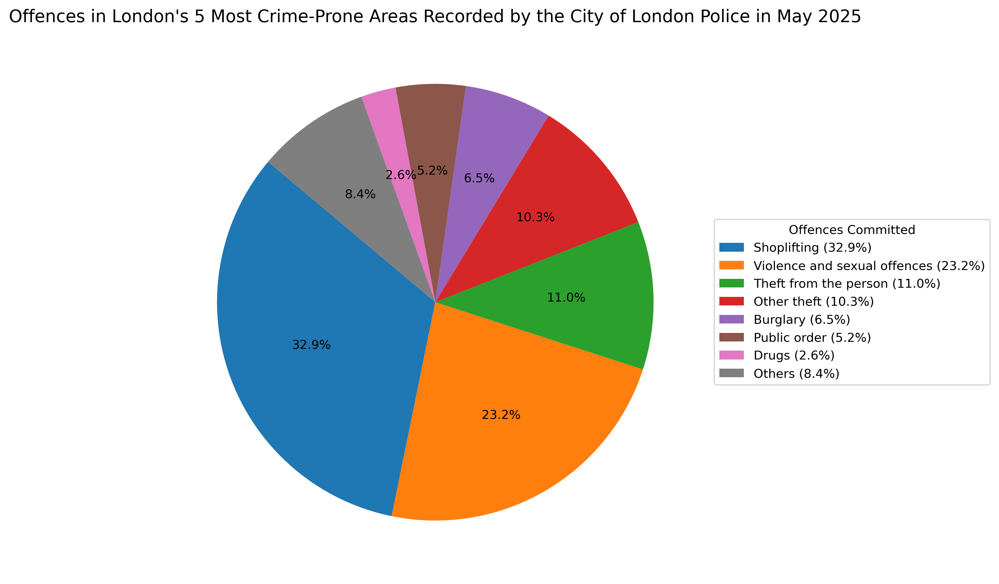

Most Committed Crimes in Selected Locations (May 2025)

Legend
Shoplifting (32.9%)
Violence and sexual offences (23.2%)
Theft from the person (11.0%)
Other theft (10.3%)
Burglary (6.5%)
Public order (5.2%)
Drugs (2.6%)
Others (8.4%)